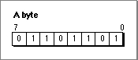
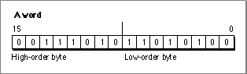
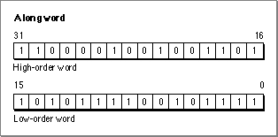
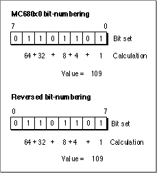
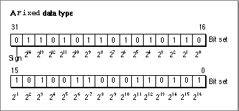
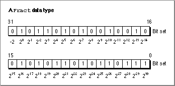
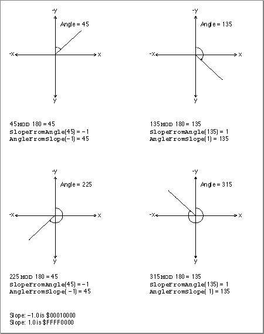

About the Mathematical and Logical Utilities
This section begins by introducing the building blocks of memory and then discusses some low-level routines the Mathematical and Logical Utilities provide, such as routines that compress data and generate pseudorandom numbers. Finally, the section concludes by introducing two fixed-point data types the Operating System supports.Bits, Bytes, Words, and Long Words
This section describes the fundamental memory units used in all computer systems and discusses some of the operations that you can perform on them using the Mathematical and Logical Utilities. If you already know what bits, bytes, words, and long words are, you can skip this section.A bit is the atomic memory unit. Each bit can be set to one of two values. Often these values are called 0 and 1. A bit is said to be cleared when its value is 0 and set when its value is 1.
Eight bits form a single byte. The first bit in a byte is bit number 7, and the last bit is bit number 0. Bit number 7 is called the most significant bit or the high-order bit, and bit number 0 is the least significant bit or the low-order bit. A byte can thus store 28, or 256, different possible values. In Pascal, a byte is thus defined like this:
TYPE Byte = 0..255;Figure 3-1 illustrates a byte set to the base-10 value 109.Figure 3-1 A byte set to 109 ($6D)

The base-10 value 109 is equivalent to the binary value 01101101. This sequence of binary digits exactly corresponds to the status of each bit in the byte illustrated in Figure 3-1. A byte value is typically represented by two hexadecimal digits. The value in Figure 3-1, for example, is equivalent to $6D.
Sometimes it is useful to quickly convert between hexadecimal and binary number formats during debugging when examining the values of individual bits in a byte.
Table 3-1 provides an easy way to do this on a digit-by-digit basis.Table 3-1 Table 3-1 Converting hexadecimal digits to binary values
Hexadecimal Binary $0 0000 $1 0001 $2 0010 $3 0011 $4 0100 $5 0101 $6 0110 $7 0111 $8 1000 $9 1001 $A 1010 $B 1011 $C 1100 $D 1101 $E 1110 $F 1111 For example, the hexadecimal value $A8 is equivalent to the binary value 10101000 because the hexadecimal digit $A is equivalent to 1010 and the digit $8 is equivalent to 1000. You can use Table 3-1 to convert numbers in both directions.
While you can always think of a byte as a particular value from $00 to $FF, sometimes that value is irrelevant. For example, an application might use a byte simply as a way to store eight flag bits; in this case, the application cares about only individual bits within the byte and not the value of the byte as a whole. Also, bytes are often used to store signed values, in which case a byte can be considered equivalent to values from -$80 to +$7F. If you use a low-level debugger like MacsBug to examine individual bytes in memory, you should also be aware that different compilers might use bytes in different ways.
Two bytes form a word. A word is thus a 16-bit quantity and can be used to store 216 (or 65,536) possible values. A word boundary is the memory location that divides two words. The first byte in a word is known as the high-order byte, and the second byte is known as the low-order byte. A pointer to a word points to the high-order byte.
Figure 3-2 illustrates a word.Figure 3-2 A word set to $3AD4

In Figure 3-2, the high-order byte is set to $3A. The low-order byte is set to $D4. The word thus has the value $3AD4.
Two words form a long word. A long word is thus a 32-bit quantity and can be used to store 232 (or 4,294,967,296) values. A long-word boundary is the memory location that divides two long words. A long word consists of a high-order word and a low-order word, as illustrated in Figure 3-3.
Figure 3-3 A long word set to $C24DAF2F

In Figure 3-3, the high-order word is set to $C24D. The low-order word is set to $AF2F. The long word thus has the value $C24DAF2F.
Variables of type
Integerare signed words, and variables of typeLongIntare signed long words. On current versions of the Operating System, a memory address is stored using all 32 bits of a long word.Typically, Macintosh compilers align all values on word boundaries (and in some cases on long-word boundaries). This means that when you declare a variable of type
Bytein Pascal, the compiler is in fact likely to allocate 2 bytes of memory to store the byte; the extra byte is called a pad byte. In this case, when you attempt to test bits in a byte you have allocated, the compiler might test the corresponding bit in the wrong byte.In Pascal, there are two easy ways to avoid this problem. One is to aggregate variables of type
Booleanand of typeBytein a packed record. In this case, as long as the packed record's size is a number of bytes that is a multiple of 4, no pad bytes are added. The second technique is, for variables in which you wish to test individual bits, to allocate 2 or 4 bytes for the variable (using a variable of typeIntegerorLongInt, respectively).Bit Manipulation and Logical Operations
The Mathematical and Logical Utilities provide a number of routines that provide bit-level and byte-level control over memory, as described in "Performing Low-Level Manipulation of Memory" beginning on page 3-14. Given a pointer and offset, these routines can manipulate any specific bit in a stream of bits.The
BitTst,BitSet, andBitClrroutines allow you to test and clear individual bits within a byte. These functions are introduced in "Testing and Manipulating Bits" on page 3-14.The
- Note
- The
BitTst,BitSet, andBitClrroutines use a bit-numbering scheme that is opposite that of the MC680x0 microprocessor. This reversed bit-numbering scheme is described in the next section.BitAnd,BitOr,BitXor, andBitNotfunctions allow you to perform logical operations on long words, and theBitShiftfunction allows you to shift the bits in a long word to the right or to the left. These functions are introduced in "Performing Logical Operations on Long Words" on page 3-16.You might also need to extract one of a long word's words. The
HiWordandLoWordfunctions allow you to do this and are described in "Extracting a Word From a Long Word" on page 3-18. Finally, you might need to set a group of bytes' values directly. TheStuffHexprocedure enables you to hardcode hexadecimal values to bytes anywhere in memory and is described in "Hardcoding Byte Values" on page 3-19.Reversed Bit-Numbering
Three of the routines described in this chapter (theBitTst,BitSet, andBitClrroutines) use a bit-numbering scheme that is opposite from that of the bit-numbering scheme used by the MC680x0 microprocessor.The
BitTst,BitSet, andBitClrroutines count the bit numbers from left to right. That is, the most significant bit has the bit number 0. The MC680x0 bit number notation counts the bit numbers from right to left. (That is, the most significant bit has the biggest bit number.) Figure 3-1 illustrates these bit-numbering schemes.Figure 3-4 Bit-numbering schemes

When using routines other than the
BitTst,BitSet, andBitClrroutines or if you are an assembly-language programmer, you should use the MC680x0 bit-numbering scheme.To convert from MC680x0 bit notation to the scheme described in this section, subtract the MC680x0 bit number from the highest bit number. For example, to clear bit number 3 in a byte, you must clear bit number 4 (7-3 = 4).
Data Compression
The Mathematical and Logical Utilities include two procedures,PackBitsandUnpackBits, that allow you to provide rudimentary data compression and decompression, respectively. The procedures are not powerful enough to provide effective compression for applications that primarily concern themselves with data compression. Also, if you are compressing sound, image, or video data, the Sound Manager (described in Inside Macintosh: Sound) and the Image Compression Manager (described in Inside Macintosh: QuickTime) provide far more effective compression algorithms.You can use the
PackBitsandUnpackBitsprocedures to conserve memory both in RAM and on disk. However, because decompressing data is time consuming, typically you compress data using thePackBitsprocedure before saving a file or resource to disk and decompress data using theUnpackBitsprocedure after reading the data back from disk. Because the time required for compression and decompression usingPackBitsandUnpackBitsis usually trivial compared to the time it takes to access a typical hard disk, the routines provide a simple, low-overhead way for an application to minimize the size of its data files.The
PackBitsprocedure is effective when an uncompressed buffer of data is likely to have many consecutive bytes containing the same value. For example, some applications use data structures that include fields that the application reserves for future use. These fields are typically all set to 0. ThePackBitsprocedure senses that there is a long string of consecutive bytes containing the same value and compresses the string of bytes by using 1 byte to indicate that the subsequent compressed byte represents a number of consecutive uncompressed bytes.
PackBitswas originally intended as an easy way to compress black-and-white image data, such as MacPaint documents. However, because each pixel of a color picture is typically represented by multiple bytes of data,PackBitsis unlikely to provide effective compression for such pictures.If there is no reason to think that your data format might contain long strings of consecutive bytes, then the
PackBitsprocedure is probably not useful and might even increase the size of your files. ThePackBitsprocedure packs data 127 bytes at a time. If within the 127 bytes there is no series of 3 consecutive bytes containing the same value, then there are no gains to be made from compression. In this case, thePackBitsprocedure must use an initial byte to specify that the 127 subsequent bytes contain uncompressed data. You can compute the worst-case performance ofPackBits(that is, the maximum number of output bytes) by using the following formula:maxDstBytes := srcBytes + (srcBytes+126) DIV 127;wheremaxDstBytesstands for the maximum number of destination bytes andsrcBytesstands for the number of bytes in the uncompressed source data.You can, if desired, pack a buffer of data, and then pack the packed buffer again. However, packing data twice not only is slower than packing data once, but also is likely to result in a larger output buffer than just packing data once. If your application does pack data twice, it should unpack the data twice.
- Note
- In current versions of system software, you can request that
PackBitspack up to 32,767 bytes. ThePackBitsprocedure then processes the input buffer in 127-byte chunks. In versions of system software prior to version 6.0.2, however, you should pass toPackBitsonly buffers up to 127 bytes in length.
Pseudorandom Number Generation
Because digital computers continuously execute instructions, it is impossible for a computer to select a truly random number. To force the computer to output a number, the programmer must create an algorithm, but because algorithms always execute in the same way, the numbers an algorithm produces cannot be truly random. Random numbers are often necessary in software applications, however. For example, an entertainment software application might need to ensure that the user is not faced with the exact same game every time. Or a spreadsheet application might offer a randomization function for business users attempting to simulate various possible scenarios.To get around the impossibility of producing truly random numbers, computer scientists rely on pseudorandom number generation algorithms. These are complex numeric algorithms used to produce a series of numbers. All such series eventually repeat, but typically not until the pseudorandom number generation algorithm has been executed millions or even billions of times. Because the series is generated by an algorithm, it is possible to discern a pattern; given the first few numbers of a series, a clever user might be able to guess the next number. Typically, however, these algorithms are complicated enough to make the numbers appear random, at least to the casual observer.
Of course, because pseudorandom number generation algorithms are algorithms, they produce the same series of numbers every time. However, you can seed the pseudorandom number generator to force it to start somewhere in the middle of the series. By seeding the generator to a constantly changing variable when your application starts up, your application can produce different results each time. The value typically used to seed the pseudo-random number generator is the current date and time. Of course, time isn't random--it moves forward at a constant linear rate--but in the absence of a stopped system clock, the user will never launch your application at the same time twice, so you can be confident that your application will produce different results each time it is executed.
The Macintosh Operating System's pseudorandom number generation algorithm is accessible through the
Randomfunction. TheRandomfunction returns a pseudorandom integer from -32767 to 32767. The value that theRandomfunction produces depends on therandSeedglobal variable. TheRandomfunction changesrandSeedwhile generating a pseudorandom number, thus enabling a subsequent call toRandomto produce the next number in the series. You only need to seed the global variable once, at the start of your program.The pseudorandom number generation algorithm is designed so that as the number of times
Randomis executed approaches infinity, the percentage difference in the number of times any two integers in the range -32767 to 32767 are produced approaches 0. Thus, the pseudorandom number generator is said to produce pseudo-random numbers that are uniformly distributed in the range -32767 to 32767.This chapter does not describe the algorithm that
Randomuses to generate pseudorandom numbers. While the algorithm is sufficiently complex for most applications, applications that perform mathematical or statistical analysis might require a better pseudo-random number generator. Consult the computer science literature for information on sophisticated pseudorandom number generation algorithms.Fixed-Point Data Types
The Operating System supports two fixed-point data types, that is, numeric types that consist of integral and fractional components. Depending on the type of information you are representing with a fixed-point data type, these might be better suited for your needs than the typesInteger,LongInt, and the many floating-point types supported by the Standard Apple Numerics Environment.A variable of type
Fixedis defined like this:TYPE Fixed = LongInt;A variable of typeFixedis a 32-bit signed quantity containing an integer part in the high-order word and a fractional part in the low-order word. Figure 3-5 illustrates the format forFixed.Figure 3-5 The
Fixeddata type
The high-order word consists of the integral component of the fixed-point number, and the low-order word consists of the fractional component of the fixed-point number. Each bit, other than the most significant bit, represents a power of 2, as indicated in Figure 3-5.
Negative numbers of type
Fixedare the two's complement; that is, the negative numbers are formed by treating the fixed-point number as a long integer, inverting each bit, and adding 1 to the least significant bit.The
Fractdata type is useful for allowing accurate representation of small numbers, that is, numbers between -2 and 2. It is defined just likeFixed:TYPE Fract = LongInt;Figure 3-6 illustrates the format forFract.Figure 3-6 The
Fractdata type
Like a
Fixednumber, aFractnumber is a 32-bit quantity, but its implicit binary point is to the right of bit 30 of the number; that is, aFractnumber has 2 integer bits and 30 fraction bits. As with the typeFixed, a number is negated by taking its two's complement. Thus,Fractvalues range between -2 and 2 - (2-30), inclusive.All routines that operate on fixed-point numbers handle boundary cases uniformly. Results are rounded by adding half a unit in magnitude in the last place of the stored precision and then chopping toward zero. Overflows are set to the maximum representable value with the correct sign ($80000000 for negative results and $7FFFFFFF for positive results). Division by zero results in $8000000 if the numerator is negative and $7FFFFFFF otherwise; thus, the special case 0/0 yields $7FFFFFFF.
Angle-Slope Conversion
The Mathematical and Logical Utilities provide two functions for applications that need to draw lines at particular angles. For example, a mathematical plotting application might need to draw a 30-degree line. TheSlopeFromAngleandAngleFromSlopefunctions provide simple conversion between slope and angle values. Slopes and angles are defined in such a way as to be convenient to a computer programmer rather than correspond to the conventional mathematical interpretation.Since QuickDraw and other computer imaging schemes typically invert the y-axis (making positive down and negative up), the angle-slope conversion routines use this convention as well. Angles are measured clockwise relative to the negative y-axis (that is, relative to 12 o'clock), and are taken
- Note
- You should not rely on the
SlopeFromAngleandAngleFromSlopefunctions to produce values that will allow you to draw lines at a precise angle on the screen. The functions do not take into account the size of pixels on a screen. If pixels on a screen are not perfect squares, a 30-degree angle might appear to be a different angle to the user.MOD180, so that a 270-degree angle is considered to be equivalent to a 90-degree angle.Slopes are defined as Dx/Dy, the horizontal change divided by the vertical change for any two points on a line with the slope. Note that mathematicians typically measure slopes Dy/Dx. The convention of angle-slope conversion is convenient for applications that plot a number of lines in a graph one horizontal line at a time.
Figure 3-7 shows some equivalencies between angle and slope values for the angle-slope conversion routines.
Figure 3-7
Some slope and line equivalencies using the conventions of the angle-slope conversion routines
The
AngleFromSlopefunction is useful primarily only when speed is more important than accuracy because the function might return an angle off by as much as 1 degree from the actual angle. The function returns values between 1 and 180 (inclusive), and thus never returns an angle value between 0 and 1 degrees. If your application is likely to need precise differentiation in angles, you should probably develop alternative routines to handle angle-slope conversions.
SlopeFromAngle(0)is 0, andAngleFromSlope(0)is 180. For allxexcept for 0, however,AngleFromSlope(SlopeFromAngle(x)) = xis true. But the reverse,SlopeFromAngle(AngleFromSlope(x)) = xis not necessarily true.